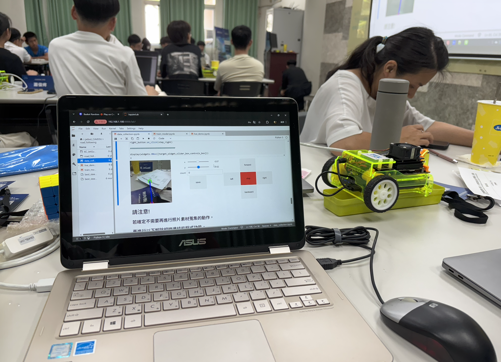
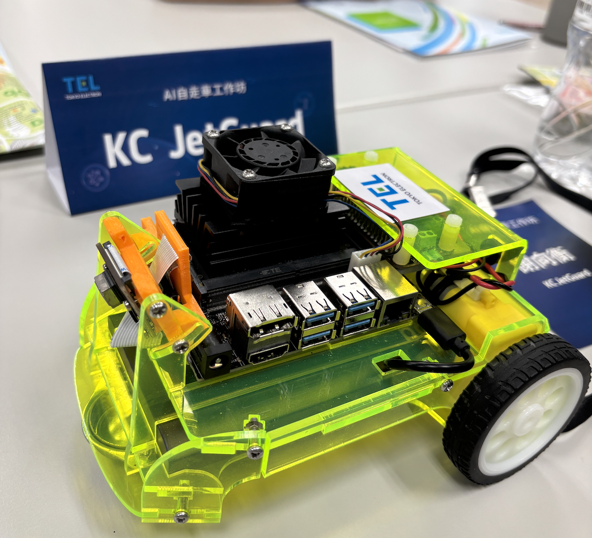

01 — OVERVIEW
Project Overview
This project focused on developing an autonomous robotic vehicle capable of following a designated lane using computer vision and machine learning. The project was completed during the Tokyo Electron AI Robotics Workshop.
AI Robotics vehicle in action.
02 — PROCESS
Development Process
Image data was collected and labeled for supervised learning. Python and JupyterLab were used to develop the machine-learning pipeline for autonomous lane following.

03 — ROBOT
Final Robot
The final system used an NVIDIA Jetson-powered robotic vehicle to process visual information and perform autonomous lane following.
